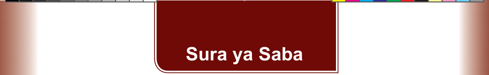

Sura ya Saba
Vipimo
Katika sura hii, utajifunza namna ya kutambua vipimo rasmi na visivyo rasmi. Pia, utajifunza jinsi ya kutumia vipimo hivyo. Umahiri utakaoupata katika sura hii, utakusaidia kutumia vipimo vilivyo rasmi na visivyo rasmi katika mazingira tofauti ili kupata kipimo sahihi.
Mazingira yetu yana vitu mbalimbali. Vitu hivyo vina ukubwa, ujazo, urefu, na uzito unaotofautiana.
Aina za vipimo
Kuna aina kuu mbili za vipimo, ambavyo ni vipimo visivyo rasmi na vipimo rasmi.
Vipimo visivyo rasmi
Ni vipimo ambavyo vinategemea makubaliano ya wahusika wanaotumia vipimo hivyo. Kwa hiyo, hutofautiana kutoka jamii moja na nyingine. Mfano kupima urefu wa shamba kwa kutumia hatua za miguu.